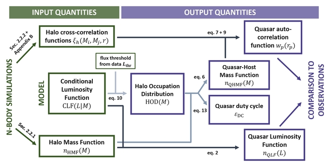
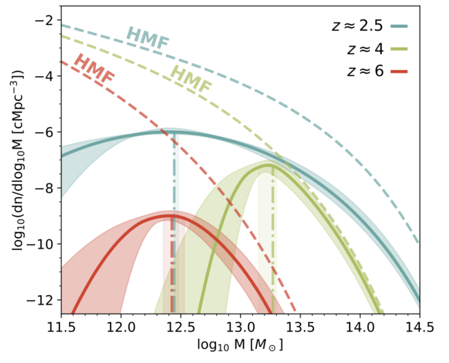
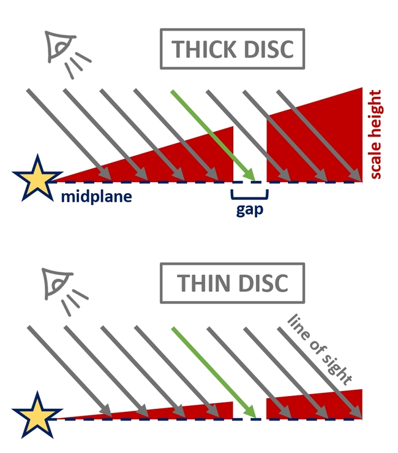
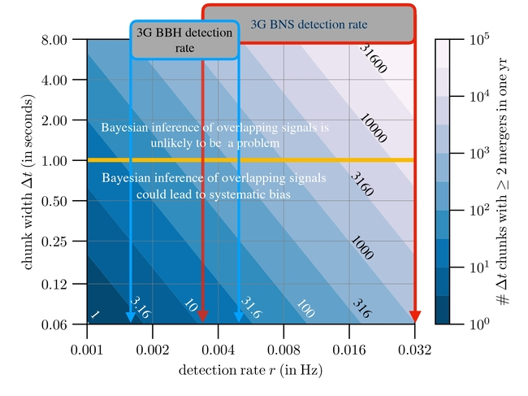

I mostly work at the intersection between theory and observations.
I try to bridge models with data by interpreting observations
in the context of theoretical predictions, using analytical as well as
numerical methods.
I am interested in a variety of topics in astrophysics.
The main project of my Ph.D. revolves around understanding
high-redshift quasars
using large-volume cosmological simulations.
Specifically, I am building a theoretical framework to
interpret observations of quasars and galaxies across cosmic time,
with the aim of answering fundamental questions such as: Where does
quasar activity takes place? How do the properties of quasars relate
to the ones of their host halos/galaxies? What is the timescale of
quasar activity and how does this relate to the growth of
supermassive black holes?
In this context, I first studied the implications of the
demographic and clustering properties of quasars at \(z\approx2-4\).
I then shifted my focus to JWST observations of
the quasar-galaxy
cross-correlation function at \(z\approx6-7\), and proposed a model
to jointly constrain the properties of quasars and galaxies.
Currently, I am focusing on the role played by quasar obscuration
across cosmic time, and I am working on extending quasar population models
to incorporate single quasar lightcurves.
I am also interested in the formation and evolution of galaxies.
For instance,
I studied models of
galactic outflows in the context
of observations of
extended [CII] halos in high redshift galaxies.
In the past, I also worked on parameter inference for
overlapping gravitational wave signals
and on using radiative transfer simulations to gauge
the morphology of protoplanetary discs.
Studying the extreme clustering of high-z quasars with large-volume N-body simulations

Recent observations from the EIGER JWST program have measured for the
first time the quasar-galaxy cross-correlation function
at 𝑧 ≈ 6. The auto-correlation function of faint 𝑧 ≈ 6 quasars was
also recently estimated. These measurements provide key
insights into the properties of quasars and galaxies at high redshift and their relation with the host dark matter halos. In this
work, we interpret these data building upon an empirical quasar population model that has been applied successfully to quasar
clustering and demographic measurements at 𝑧 ≈ 2 − 4. We make use of a new, large-volume N-body simulation with more than
a trillion particles, FLAMINGO-10k, to model quasars and galaxies simultaneously. We successfully reproduce observations
of 𝑧 ≈ 6 quasars and galaxies (i.e., their clustering properties and luminosity functions), and infer key quantities such as their
luminosity-halo mass relation, the mass function of their host halos, and their duty cycle/occupation fraction. Our key findings
are: (i) quasars reside on average in ≈ 1012.4 M⊙ halos (corresponding to ≈ 5𝜎 fluctuations in the initial conditions of the linear
density field), but the distribution of host halo masses is quite broad; (ii) the duty cycle of (UV-bright) quasar activity is relatively
low (≲ 1%); (iii) galaxies (that are bright in [O III]) live in much smaller halos (≈ 1010.9 M⊙ ) and have a larger duty cycle
(occupation fraction) of ≈ 20%. Finally, we focus on the inferred properties of quasars and present a homogeneous analysis of
their evolution with redshift. The picture that emerges reveals a strong evolution of the host halo mass and duty cycle of quasars
at 𝑧 ≈ 2 − 6, and calls for new investigations of the role of quasar activity across cosmic time
A unified model for the clustering of quasars and galaxies at high redshift

Recent observations from the EIGER JWST program have measured for the
first time the quasar-galaxy cross-correlation function
at 𝑧 ≈ 6. The auto-correlation function of faint 𝑧 ≈ 6 quasars was
also recently estimated. These measurements provide key
insights into the properties of quasars and galaxies at high
redshift and their relation with the host dark matter halos.
In this work, we interpret these data building upon an empirical quasar
population model that has been applied successfully to quasar
clustering and demographic measurements at 𝑧 ≈ 2 − 4.
We make use of a new, large-volume N-body simulation with more than
a trillion particles, FLAMINGO-10k, to model quasars and galaxies
simultaneously. We successfully reproduce observations
of 𝑧 ≈ 6 quasars and galaxies (i.e., their clustering properties and
luminosity functions), and infer key quantities such as their
luminosity-halo mass relation, the mass function of their host halos,
and their duty cycle/occupation fraction. Our key findings
are: (i) quasars reside on average in ≈ 1012.4 M⊙ halos (corresponding to
≈ 5𝜎 fluctuations in the initial conditions of the linear
density field), but the distribution of host halo masses is quite broad;
(ii) the duty cycle of (UV-bright) quasar activity is relatively
low (≲ 1%); (iii) galaxies (that are bright in [O III]) live in much
smaller halos (≈ 1010.9 M⊙ ) and have a larger duty cycle
(occupation fraction) of ≈ 20%. Finally, we focus on the inferred
properties of quasars and present a homogeneous analysis of
their evolution with redshift. The picture that emerges reveals
a strong evolution of the host halo mass and duty cycle of quasars
at 𝑧 ≈ 2 − 6, and calls for new investigations of the role of
quasar activity across cosmic time
Modeling outflows and [CII] halos in high-redshift galaxies
Investigating the complex environments of galaxies during the Epoch of Reionization
(EoR) is one of the most pressing research goals of modern astrophysics.
As shown by cosmological simulations, galaxies are already forming
in the EoR, and they present different properties with respect to the ones
seen in the local Universe. Unraveling how galaxies formed and evolved during these
remote epochs (i.e., a few hundred million years after the Big Bang)
is at the heart of our understanding of cosmic evolution.
In this context, the advent of the Atacama Large Millimeter/submillimeter Array (ALMA)
and the NOrthern Extended Millimeter Array (NOEMA) have opened a new
window on the primordial Universe, allowing us to shed light on
the obscured star formation and ISM line emission at rest-frame FIR
wavelengths up to z~7.
Combining the
information coming from the dust continuum emission, as well as from some relevant
FIR emission lines such as [CII], [O III], and CO from various rotational
levels, we are rapidly improving our understanding of the small-scale,
internal properties and assembly history of galaxies in the EoR.
One of the most compelling findings made by ALMA is that a significant
fraction of z~4-6 galaxies is surrounded by extended (10-15 kpc)
[C II]-emitting haloes that are not predicted by even the most
advanced zoom-in simulations.
This discovery poses a series of thorny theoretical questions,
involving their formation mechanisms, evolution, and impact on the
enshrouded galaxies as well as on the external regions where
the intergalactic medium (IGM) resides.
As part of my Master Thesis, working with Andrea Ferrara, Andrea Pallottini,
and the cosmology group at SNS, we took on the problem of a finding plausible
mechanism to explain the formation of these halos. In particular,
we focused on the hypothesis that these halos result from the remnants of past –
or ongoing – outflow activity. We explored this idea by using a semi-analytical model for
an outflow that undergoes catastrophic cooling in the inner region of the halo. Computing
the abundance of singly ionized carbon and simulating the resulting [C II] emission, we
compared it directly with observational evidence coming from recent ALMA data,
and we conclude that outflows represent a promising answer to explain the origin of the
observed [C II] halos. In a series of two papers, we analyzed
the properties of [CII] halos in stacked and individual observations
(from the ALPINE sruvey) and showed that the outflows that are needed
to generate such halos have the
mass loading factors are in the range ~4-7,
with higher values for lower mass, lower star formation rate
systems, and scale with stellar mass in a way that is
consistent with the momentum-driven hypothesis. Our model
points to the presence of extended [CII] emission as a tangible
sign of feedback mechanisms connected with star formation already in place
in high-redshift galaxies.
Turbulence and morphology of protoplanetary discs

Constraining the strength of gas turbulence in protoplanetary discs is an open problem
that has very relevant implications for the physics of gas accretion and planet formation.
A promising method to gauge the level of gas turbulence in discs is to measure the vertical
scale height of the dust component, which is expected to be coupled to the gas component
through the gas-dust coupling. This has become possible in the last few years
thanks to the very high-resolution observations provided by the ALMA telescope.
These observations uncovered a large amount of features in the 2d images
of protoplanetary discs, including dark gaps and emission rings.
As shown by Pinte et al. 2016,
it is possible to exploit these features to uncover 3-d morphology of discs.
The idea is very simple: due to projection effects, a gap in a disc emission
profiles will be partly filled by the emission coming from the
neighbouring regions. This effect is stronger along the minor axis
of the disc, whereas the major axis is only marginally affected.
For this reason, one can compare the gap contrast along the major and
minor axes to infer the amount of "filling" that has taken place.
This gap filling is directly dependent on the vertical structure of the
disc (see figure on the left). Hence, a measurement of the gap contrast
along the major and minor axes can be used to infer the vertical scale
height of the disc, and to indirectly gauge the amount of gas turbulence in discs.
In a work I have done with Giovanni Rosotti
and Benoit Tabone, we applied this method to the sample of discs
observed by the DSHARP collaboration, for which high resolution images
are available. We built a radiative transfer model to reproduce the
observed gap constrast for different values of the dust scale heights.
and found that (a) the scale heights that yield a better agreement with data are
generally low (less than ~4 AU at a radial distance of 100 AU), and in
almost all cases we are only able to place upper limits on their exact values;
these conclusions imply
low levels of gas turbulence in discs; (b) for a significant fraction of
the DSHARP sample, our method yields no significant constraints on the disc
vertical structure; we concluded
that this is because these discs have either a low inclination or gaps
that are not deep enough. Based on our analysis, we provided an empirical
criterion to assess whether a given disc is suitable to measure the
vertical scale height.
Overlapping gravitational waves signals in the next generation of detectors

With the first direct detection of gravitational waves in 2015,
the era of gravitational-wave astronomy has begun. This first decade
of observations has already provided a wealth of information about
compact binary mergers, neutron stars, and black holes. The future
of this research field looks even brighter, with the next generation of detectors
like the Cosmic Explorer and the Einstein Telescope expected to
observe hundreds of thousands of binary coalescence events each year.
With huge leaps in sensitivity, however, new challenges arise.
One of the most pressing issues for the next generation of detectors
is that signals from coalescing binaries will be so frequent that
they will start to overlap with each other.
When two signals overlap, the standard data-analysis pipelines
used to detect and infer the properties of these signals
are not guaranteed to work. While the detection
pipelines have been shown to work well even in the presence of
overlapping signals, the parameter inference algorithms used to
estimate the properties of these signals represent a more compelling
problem, as overlap of multiple signals in the time/frequency
domains may result in biases in the final parameter estimates.
In a work done with Bangalore Sathyaprakash, Surabhi
Sachdev, Anuradha Gupta, and the LIGO group at Penn State,
we were among the first to quantify the biases arising by using
the current parameter inference pipelines to constrain the
parameters of a compact binary coalescence (CBC) signal
in the presence of multiple overlapping ones. We showed that, since
the current detection pipelines provide the coalescence time of
each signal with an accuracy of ~10 ms, one can set a prior
on the coalescence time exploiting this information. In this way,
it is possible to correctly infer the properties of
multiple overlapping signals even
with the current data-analysis infrastructure. By studying different
configurations of overlapping signals, varying their time
and phase at coalescence, as well as
their signal-to-noise ratios, we find that the is robust provided
that the coalescence times of the signals in the detector frame
are more than ~1-2 seconds apart. Signals whose coalescence epochs lie
within ~0.5 seconds of each other suffer from significant
biases in parameter inference, and new strategies and algorithms
will be required in the future to overcome such biases.